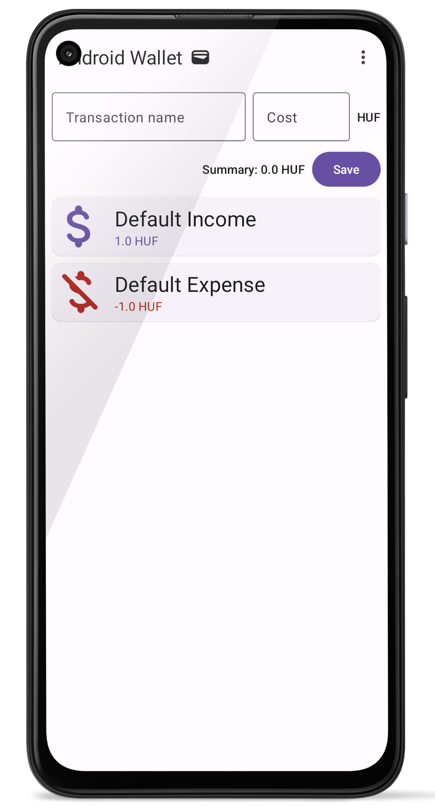
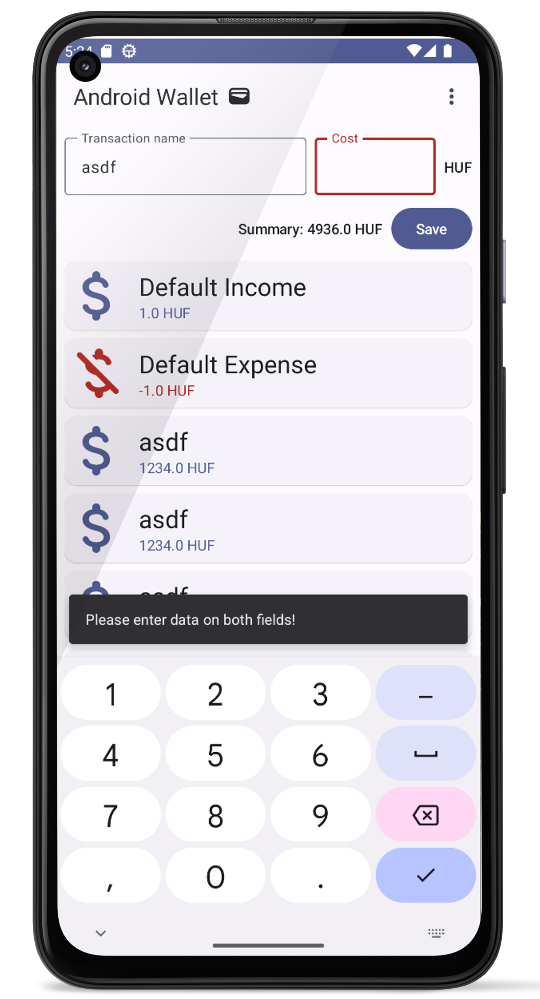

Labor 03 Extra - Jetpackkel az égbe és tovább ✨ 🚀 🌌¶
Szerző: Püspök-Kiss Balázs
Ha bármi probléma lenne az extra laborral, Püspök-Kiss Balázs-ra írjatok rá Teams-en, ő szívesen segít bármiben. Visszajelzéseket is nagy örömmel fogad. 🙂
Bevezető¶
Az Extra feladat célja, hogy bemutasson egy megoldást, ami a legmodernebb eszközöket alkalmazza a fejlesztés során. A motiváció a laborok átdolgozása mögött az, hogy szerintem a jelenlegi laborok többnyire elavult technológiákat használnak, amik egy kötelező rossz az ipar számára. A régi technológiák támogatása szükséges, azonban mindig érdemes a jövőre figyelni, ott bővíteni a jelenlegi tudását az embernek.
A dokumentáció segítségével egy olyan alkalmazást hozol létre, amit követendő példának ítélek meg. A megoldás során szó fog esni ajánlott eszközökről, amik jelentősen megkönnyítették számomra a fejlesztést, valamint nagyon hasznosnak ítélem meg őket és használatuk segíthet majd a házi feladat megírásában is.
Feladat előtti megjegyzés¶
Ez a feladat sok bónusz infót tartalmaz, aminek a használata a való életben nagyon kívánt, azonban
valószínűleg nem lesz számonkérve. A legjobb tudásom ellenére is azt kérem, hogy keressétek fel
gyakran a Jetpack Compose dokumentációját a hivatalos oldalán, sokkal több mindenről esik szó ott,
amire nekem nincs időm kitérni. StackOverflow is hasznos olykor, keresni a Google-ön egyet, ha
rögtön nem működik valami. Az előző labor (PublicTransport) Extra feladatánál sok olyan hasznos
dolgot elmagyaráztam, amit ennél a labornál nem fogok kifejteni. Viszont ennek ismerete nem
feltétel a labor elvégzéséhez feltétlenül. Önálló feladat során inkább a hivatalos dokumentációkra
és Google-re lehet támaszkodni. Kreatív feladatokat próbáltam tervezni, mintsem nagyon érthetetlen
agyalósakat.
Az én második (e) laborom átírásakor észrevettem magamon azt, hogy elszalad velem a ló, minél jobb megoldást szeretnék találni arra a problémára, amit a sima labor szerintem nem oldott meg jól. Ahogy átgondolom a céljaimat e anyag írásával kapcsolatban, nem úgy kellene fogalmazzak, hogy én átírom/átdolgozom a labort. Ezen feladatnak nemcsak az a célja, hogy bemutasson egy-két feature-t, hanem egy jelentősebb célja az, hogy ezen megfelelő használatát mutassa be.
Az a kegyetlen igazság, hogy a laborok célja jelenleg nem az, hogy egy jó módon bemutassa azt, hogy és mit kellene csinálni, hogy megoldjatok meg egy problémát, hanem az, hogy bemutasson egy-két absztrakciót-elemet-megoldást olyan problémákra, amiket production környezetben soha nem szabadna úgy megoldani, ahogy a laboron csinálják (elég szigorú vagyok magammal szemben, azt érdemes hozzátenni). Mondok néhány példát, amit valószínűleg majd még néhány néhány labor után fogtok csak megérteni:
- Soha nem használnék RecycleView.Adapter-t, forever ListAdapter ha listákat kell kezelni.
- Betiltanám a code-behind fajta programozást, valami architektúrát kellene tanítani, mint MVVM, vagy RainbowCake (amit egyébként a magyar Braun Márton fejlesztett).
- Plain SQLite használatát is betiltanám, Room-mal kezdeném a perzisztens adattárolás tanítását.
- Kötelezővé tenném a Bibliát.
- Sokkal több (és jobb) 3rd party és Jetpack lib-et használnék.
A rant-et ezennel felfüggesztem.
Setup ⚙¶
A kezdő projekt az AndroidWallet.zip fájlba van becsomagolva
(ha be van valahova csomagolva). Egy projekt setup-olása és felkonfigurálása fontos, de nem a
világot szeretném megváltani, úgyhogy annak az elmagyarázása majd egy másik napra marad.
Mindenesetre megjegyzek néhány dolgot. *Át lehet ugrani idő hiányában a Setup részt, de ez nem
lesz hosszú. A setup kb. ugyanaz, mint a 2. labor Extra feladatánál, azonban van néhány különbség.
Proguard, R8 és MaterialIcons¶
A Module build.gradle fájlban feltűnik néhány különbség a default-hoz képest. minifyEnabled
lehetővé teszi a felesleges kód eltávolítását, a kód obfuszkációját, valamint optimalizálja azt.
shrinkResources eltávolítja a nem használt resource fájlokat, ezzel is helyet spórolva. A meglévő
fájlok minősége nem romlik! Ezeket a kulcsszavakat egyébként a Proguard és R8 biztosítja
számunkra. Ezek az eszközök optimalizálják a kódot és lekicsinyítik az alkalmazást igény szerint,
de sokkal többet tudnak, mint amiről itt szót ejtettem.
android {
//...
buildTypes {
release {
minifyEnabled true
shrinkResources true // removes unused resources from /res folder
proguardFiles getDefaultProguardFile('proguard-android-optimize.txt'), 'proguard-rules.pro'
}
}
//...
}
MaterialIcons egy elég nagy könyvtár, ami amellett, hogy nagyon hasznos, elég sok erőforrás van
benne kihasználatlanul. Proguard és R8 segít a fel nem használt részeket kihagyni az
alkalmazásból, ezáltal az gyorsabban települ és fut. Egyébként MaterialIcons extended verziója
a Google Icons teljes kínálatával fel van szerelve, így egy pici idő lehet, míg betölti a built-in
linter a dolgokat a suggestion-öknél, viszont minden elérhető programmatikusan, ImageVector-okban.
dependencies {
//...
// Material design icons
implementation "androidx.compose.material:material-icons-core:$compose_version"
// Extended version contains all the Icons!
implementation "androidx.compose.material:material-icons-extended:$compose_version"
//...
}
Lightspeed ☀ 💫 ✨ 🚀¶
A példa megoldásom kinézete. Nektek nem feltétlenül kell így kinéznie, rátok bízom, hogyan jelenítitek meg az adatokat.

A labor jelentős része meg van írva, viszont van néhány rész, amit a képzelőerőtökre szerettem volna hagyni. Kérlek olvassátok el és kísérletezzetek az adott részekkel, mert érdekesek lehetnek, ha egy apró paramétert megváltoztattok és megfigyelitek a megváltozott viselkedést.
Lesz olyan feladat, ami kívánja azt, hogy rakjatok össze egy UI komponenst a már meglévő composable-ökből! Ügyeltem arra, hogy ne legyen túlságosan nehéz, hogy a példákból lehessen csipegetni, de ha elakadtok, vagy kísérletezni szeretnétek, akkor a Jetpack Compose dokumentációja mindig kéznél van. Ha egy Compose-os alternatíváját szeretnétek megtudni egy XML és Fragment-es elemhez, akkor ez a honlap kisegíthet titeket.
Keyboard kezelése ⌨¶

Snackbar így jelenne meg ideális esetben.
Az alkalmazás feldob egy SnackBar-t, mikor hibás adatok kerülnek be a TextField-be. Ha éppen
meg van nyitva a szoftveres billentyűzet, akkor ez a billentyűzet alapesetben kitakarja a
SnackBar-t. Ez veszélyes! Szerencsére Jetpack Composeban nagyon egyszerű a fix.
A ui/theme/Theme.kt file-ba, a SideEffect scope-jába be kell rakni az alábbi sort.
WindowCompat.setDecorFitsSystemWindows(window, false)
Azonban ez még nem oldja meg magába a problémát! Ahhoz, hogy a SnackBar jól reagálja le a keyboard
változását, meg kell mondani, melyik UI komponens-en legyen az az adott padding, ami
beleszámítja a billentyűzetet. Én 3 népszerű padding-et szoktam ilyenkor használni, amik
egyébként Modifier-ek:
Modifier
.imePadding()
.statusBarsPadding()
.navigationBarsPadding()
Ezeket a paddingeket egyébként be is lehet illeszteni a SnackbarHost Modifier paraméteréhez.
TransactionCard 💳¶
Hogy egy picit gyakoroljatok, üresen hagytam egy-két apró részt, pl. a TransactionCard composable
belsejét. Egyedileg testre tudjátok szabni, tudtok kísérletezni, hogy hogyan legyenek elrendezve
az imageVector-t és color-t felhasználó UI komponensek az ElevatedCard-on belül.
A fenti kép ad egy példát, hogy mit kellene alkotni, hogyan nézhet ki egy végleges layout.
Ezeknél a részeknél többnyire nincs rossz megoldás, csak legyenek megjelenítve az elvárt
információk, mint a Transaction neve (name) és értéke (worth).
Határ a csillagos ég 🌉 🌃 🌌¶
Egyelőre ezt a két (PublicTransport és AndroidWallet) labort írtam át Jetpack Composera,
hogy példát mutassak, hogyan lehetne akár egy háziban felhasználni őket. Egy kicsi tréningnek
szántam ezt a labort, hogy gyakoroljátok, miként is lehet UI-t írni XML nélkül. Remélem jó kis
introduction projektek voltak ezek, lehet látni a különbséget és azt is, hogy sokkal nagyobb meló
lenne XML-ben megvalósítani olyan funkcionalitást, amit Compose-ban néhány sor.
Néhány hasznos Jetpack Compose lib¶
A labort néhány szerintem hasznos könyvtárral zárnám Compose-hoz, hogy minél több eszköz álljon rendelkezésetekre egy esetleges házi megírásához.
Compose Destinations¶
Navigation Component szerintem nagyon jó ha az ember XML-t és Fragment-eket használ, azonban a Compose változatát elég nehéz használni. NavComponent használatáról a Navigating with Compose cikkben olvashattok. Mindenesetre van egy nagyon menő alternatívája, konkrétan egy wrapper a NavComponent köré, ez pedig nem más, mint a Compose Destinations. Destinations annotációkkal oldja meg a munka többségét, ami egy elég manuális munka lenne NavComponent esetén. Szerintem egy nagyon egyszerű és kényelmes megoldás a navigáció megoldására.
Accompanist¶
A Google egyik könyvtára Compose-hoz, ami minden hasznos funkciót tartalmaz, amit a Compose még nem támogat natívan. Van benne animáció, permission kezelés, Flow layoutok, Swipe to refresh és még nagyon sok minden!
Coil¶
Ha XML-t használtok, valószínűleg szó fog esni Glideról. Mint ahogy a Glide, ez is egy képeket
betöltő és automatikusan cache-elő könyvtár, ami Kotlin Coroutine-okat használ egy nagyon
lightweight, könnyű használni, van Compose implementációja is, míg Glide oldalán nem találok
hivatalos információt, hogy lenne.
Hilt with Compose¶
Az igazi programozó nem bízza a véletrenre, Unit teszteket ír és ennek egyik legjobb módja a Mock-olós tesztelés. Ehhez pedig kell a Dependency Injection. Szoftvertechnikák megvan ☺? TLDR: Könnyen DI-t megoldani Hilttel lehet, szerencsére van Compose támogatása. A jövőben majd fogtok MVVM alapú architektúrával is dolgozni, ehhez pedig elengedhetetlen lesz a DI. Hilt és Hilt with Compose jelenleg sok támogatást kap Google-éktól, így bátran támogatom a hosszú távú használatát.
Compose Material 3¶
Előző laborban nagy szerepet kapott, viszont a Material Design 3 az Android design jövője, így kihagyhatatlan egy ilyen felsorolásból. Aki eddig nem használta, használja, sokkal szebb lesz az applikációtok, ami szerintem sokat számít!
Azért vannak hiányosságai Material Design 3-nak Material Design 2-vel szemben, de a Google az utóbbi időben elkezdett sok mindent átportolni Compose Material 3-ra és a régi UI elemeket Design 3-ra.
Végszó¶
Köszi, hogy végigszenvedtétek ezt velem, próbáltam a maxot kihozni az egészből, sokat számít nekem nagyon hogy itt voltatok, tudom, néha cringe lehettem, meg nem mentem bele a végletekig dolgokba, de próbáltam egy hasznos, egyedibb, viccesebb, emészthetőbb anyagot kihozni az egészből.